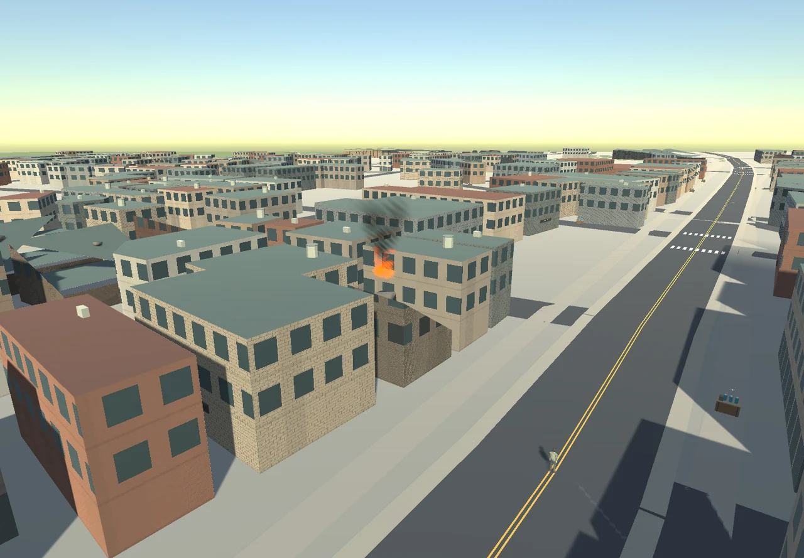

Tracefolio REPORTS & ISSUES
Tracefolio REPORTS & ISSUES수원 도시 최종 전달·화재 상세 실행 화면
완료최종 전달 기록에 불꽃과 연기가 직접 보이는 실제 게임 상세 장면을 추가합니다.
작업 결과
localhost8788에서 새 도시가 실행됩니다. 전체6개 작업의 현재 버전 QA와 최종 QA를 통과하고 메뉴얼v1.0.8을 완료 처리했습니다.
변경 내용
적용 내용
실제 수원 윤곽·팔달문/장안문/화서문·행궁 주변·용도별 건물/거리·반파/불꽃·연기를 적용했습니다. 상세 변경/실제 화면/제약: https://mdj0126.github.io/codex-config/projects/last37n/reports/2026-10-30-result-20261030200231363-v1.0.0.html

서버 실행 tools/start-local.ps1 → 기본 검사 tools/test-server.ps1 → 전체 -Mode Full →100명90초 -Mode Load. 게임 http://localhost:8788 을 일반/시크릿 창에 각각 열고 F2 같은 월드에서 이동/Enter 채팅/재접속을 확인하십시오. 현재 로컬127.0.0.1 전용입니다.

위 장면은 게임 실행 카메라의 실제 렌더입니다. 웹 거리 캡처에서는 불이 카메라 밖에 있어, 이 별도 각도에서 불꽃·연기와 반파 건물 상태를 직접 확인했습니다.
검증
실제 Native6장면, Web 두 클라이언트10개 검사·도시 월드 전환/채팅/점프/숙이기/재접속·파밍/상인/의무병UI, 서버89개/실제PostGIS·TypeScript,100명90초/10명재접속/오류0 통과. Web 초기11095729bytes<12MiB, 기본8788 실제도시/기존기능/오류0 확인. 공개HTML3개·이미지6개 바이트동일·메인목록 링크 확인: 2026-10-30T20:05:03.278Z; 보고서441개/링크15236개·필터/검색·아카이브37검사·PC/모바일 보고서 이미지 통과. 메뉴얼: https://mdj0126.github.io/codex-config/projects/last37n/reports/2026-10-30-manual-suwon-city-scenery-20261030200543262-v1.0.8.html. 게임 소스 로컬 커밋91c960b. 최초 보고서 푸시759bb78, 공개 파일을 직접 대조했으며 Actions 상태는 별도로 기록했습니다.
화재 상세 실제 Native 장면에서 활성 화재2개·ParticleSystem4개·입자 예산176·엔진 오류0을 확인했습니다. 추가 WebP는 원본1440x1000에서1280px로 줄이고 메타데이터를 제거해200KB 아래로 보존했습니다.
남은 사항
지형은 평면·다수 높이 임시9m입니다. 반파 내부 진입·화재 피해/확산/진압은 미구현입니다. 외부접속·저사양/모바일·100개 Unity 렌더 성능은 미확인입니다. 교훈 검토: 실제 화면/원본/서버 판정 대조는 기존 전역 지침과 중복되어 전역 추가/통합 변경 없음. 프로젝트 문서와 실패 이력을 보존했습니다.
작업 시간
- 제안 시간: 45~75분. 시작2026-10-31 04:14:41 KST.
- 실제로 완료된 시간: 기능·최초 공개 검증 및 상세 화면 정리 55분50초, 2026-10-31 05:10:30 KST. 이 최종 기록의 공개 확인 시간은 채팅에 별도 기록합니다.
- XERJ: 미사용 — XERJ 도구 미제공, rg·소스/원본 해시·실제 실행으로 대체.